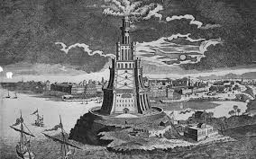

MY LAST TWEET
Hee-hawl!
12/02/2012 23:12
MY PICTURES

MY FRIDENDS
- Ramaya
- Harsha
- Theju
- Ruchitha
- Ramaya
- Harsha
- Theju
- Ruchitha
New venture In December 2009, the charity departed from its previous bridge builds by beginning work on a new and unusual project. The Arup x WZQ Bridge in the village of Mixia, Yunnan Province, was entirely funded, designed and constructed by the engineering group Arup, working with assistance from architecture and engineering university students from both Hong Kong and China. The scale and complexity of the proposed bridge was greater than any previous Wu Zhi Qiao project. Mixia lies in a remote mountainous region near the border between China and Vietnam, 11 hours’ drive from the nearest airport in the city of Kunming. The location for the bridge is inaccessible by vehicle, and can only be reached by following a steep and muddy footpath more than a kilometre out of the village – a 40 minute trek on foot. The original river crossing took the form of a primitive footbridge constructed from bamboo and supported by a bamboo basket filled with stones for the central pier. The span of the bridge was 18 m with access on both sides via a scramble down steep banks. The river itself swells during the rainy season, with the water level rising up to 6 m, and this force often swept the bridge away. The charity’s founder, Professor Edward Ng, could see that it had never constructed a bridge for such a difficult location before; hence the need for Arup’s experience. For the company’s engineers, the project provided an unusual opportunity. As well as the usual consultancy involvement with the design development and onsite supervision, they would also be responsible for the architectural concept, procurement, overall construction cost and all aspects of onsite construction management – all of this without access to any heavy machinery or electricity. To further complicate the challenge, they would also be facing a language barrier.
The villagers are from the Hani tribe, and speak a form of the Tibeto-Burman language, with only a few villagers able to speak Mandarin. In December 2009, a team comprising Arup staff and students from The Chinese University of Hong Kong (CUHK) and Kunming University of Science and Technology (KUST) visited the remote site to undertake the initial reconnaissance and surveying.
With no vehicle access or power available onsite and access on both banks limited by the steepness of the terrain, the constraints of the design brief were challenging. To bring as much imagination as possible to the project, Arup launched a design competition within its offices worldwide. An expert panel of representatives from the company and the Wu Zhi Qiao Charitable Foundation judged the 44 entries. The selected design was then developed over the course of 11months integrating the expertise of Arup engineers from offices in Hong Kong and mainland China, with the assistance of students from Xi’an University. Ut wisi enim ad minim veniam, quis nostrud exerci tation ullamcorper suscipit lobortis nisl ut aliquip ex ea commodo consequat. Duis autem vel eum iriure dolor in hendrerit in vulputate velit esse molestie consequat, vel illum dolore eu feugiat nulla facilisis at vero eros et accumsan et iusto odio dignissim qui blandit praesent luptatum zzril delenit augue duis dolore te feugait nulla facilisi. Nam liber tempor cum soluta nobis eleifend option congue nihil imperdiet doming id quod mazim placerat facer possim assum.
Let me introduce myself, My name is Zozor, I was born on 23rd Nov,2005.
A bit meager is it not? this is why I have now dedded to write my biography to let my readers know who I really am.
Hee-hawl!
12/02/2012 23:12